01The Color Itself
A dry cake of indigo, dark in the hand before it is blue in the cloth.
Indigo is both a color and a substance you can hold. You can weigh a dry cake of it in the palm, break it, and see the dusty blue waiting inside the almost black surface. It was a dye long before it settled into ordinary speech as the name of a shade.
This hall begins there, with that double life. One indigo lives in light, between blue and violet. The other lives in leaves, vats, and stained hands. The two have travelled together for thousands of years, and neither quite explains the other.
02Between Blue and Violet
Indigo held between a clear blue on one side and a soft violet on the other.
In the spectrum, indigo sits in the narrow ground between blue and violet, closer to blue but leaning toward the purple end of the light. It is deep, cool, and slightly muted, as if blue had moved into shade without losing its clarity.
It reads as its own color because that position changes its mood. Blue feels open and daylight clear. Violet feels nearer to flower petals and dusk. Indigo stands between them, reserved and dense, and the eye learns the difference by looking, not by argument.
03The Seventh Color
Seven bands in a prism spectrum, with indigo counted among them.
Isaac Newton divided the spectrum into seven colors: red, orange, yellow, green, blue, indigo, and violet. The rainbow itself does not arrive in tidy bands. It shades continuously from one hue to the next, and any count is a human decision laid gently over light.
Indigo was given a seat partly for the music of the number seven. Newton liked the parallel with the seven notes of the musical scale, and the fit pleased him. The registrar notes this without complaint. Seven is a satisfying number, even when nature has not asked for it.
04Why Eyes Disagree
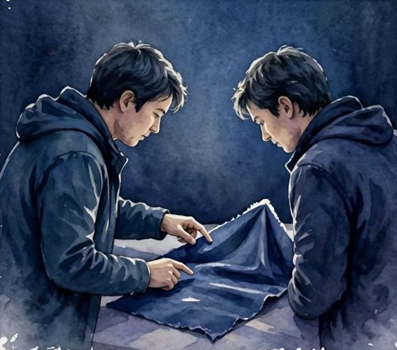
The same swatch photographed under daylight, lamplight, and a phone screen.
Two honest people can look at the same swatch and disagree. One calls it blue, the other calls it violet, and both are reporting what they see. Eyes differ, lighting differs, and memory quietly compares the color with every blue worn or painted before.
Screens and printers widen the argument. A monitor mixes light, a printer lays down ink, and neither reproduces the deep band in quite the same way. Indigo lives near a border, and border colors are where certainty goes to be tested.
05Indigo at Dusk
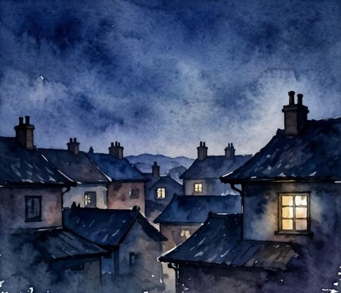
The last deep blue above a roofline, a few minutes before true night.
There is a short hour when the sky stops being blue in the daytime sense and has not yet become black. The light thins, edges soften, and the upper air holds a deep, even color that seems to come from far above the rooftops.
That is indigo at dusk, the last color before true night. It does not announce itself. It gathers slowly while the west still remembers the sun, and then, almost without a moment you can point to, it is gone and the stars are simply there.
06A Color Made of Distance
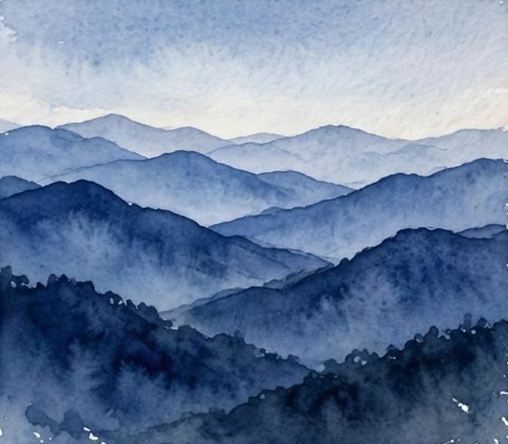
Three ridges in a row, each one bluer and paler than the last.
Look across a valley in the late afternoon and the far ridges are no longer green or grey. They have turned blue, then deeper blue, until the most distant line rests in something close to indigo against the sky.
The air itself lends the color. Between you and the mountain stands a long column of atmosphere, scattering light and laying its own tint over stone and trees. Distance, usually thought of as empty, proves to have a color of its own.
07The Darkest Bright Color
Folded indigo cloth, near black in the creases and vivid where the light strikes.
Fold a piece of indigo cloth and the creases go almost black. Smooth it toward the light and the same surface turns vivid, an intense blue with violet waiting underneath. Few colors hold darkness and brightness together without quarrelling.
That is its character: depth. Indigo does not sparkle or shout. It absorbs light in one place and returns it in another, so a plain piece of cloth can look quietly varied from fold to fold, as water does when a cloud passes.
08Indigo in the Rainbow
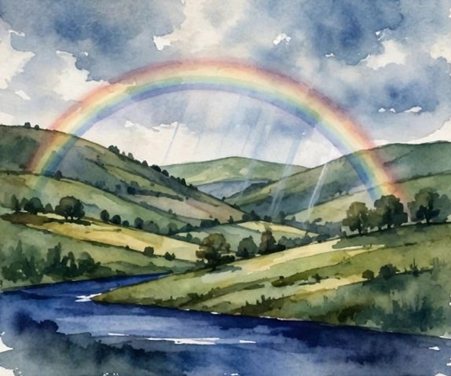
A rainbow after rain, its blue band narrowing toward violet.
After rain, when the sun returns low and the air is washed clean, a rainbow may show its bands in order. Between the broad blue and the violet edge there should be indigo, narrower than either and easy to lose.
It is hard to find because the spectrum does not divide itself for our convenience. Colors pass into one another without lines. You may see only blue deepening toward violet and have to trust that indigo is present in the passage, whether or not the eye can isolate it.
09What Indigo Is Not
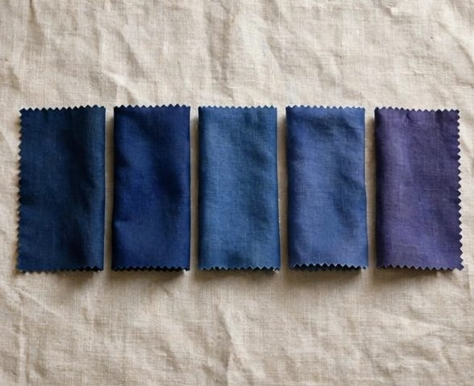
Navy, royal blue, and purple laid side by side for quiet comparison.
Indigo is not navy, though they are often confused in poor light. Navy is darker, flatter, and closer to a uniform. It is not royal blue either, which is brighter and more assertive, a blue that expects to be noticed across a room.
Nor is it purple. Purple leans toward red and sits nearer to wine and plum. Indigo stays on the cool side, deep blue with only a hint of violet. A small field guide, then: if it glows, think royal; if it warms, think purple; if it deepens quietly, think indigo.
10The Color of Work
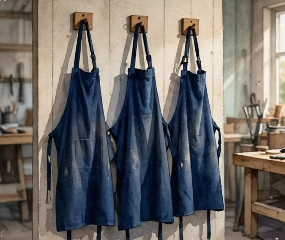
A worn work apron, faded at the pockets where hands have rested for years.
Indigo belongs to work clothes: aprons, overalls, jackets, and uniforms made to be worn hard and washed often. It hides stains gracefully, fades in an honest pattern at knees and pockets, and looks better worn than many colors look new.
There is a practical reason for its long service, and a human one. A color that darkens in shadow and softens with use suits labor. From here the hall turns from the color itself to the plant that gave it, which is plainer than anyone expects.
11Indigofera Tinctoria
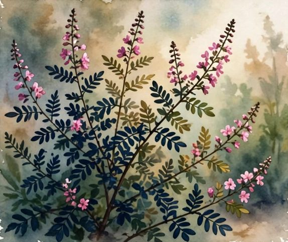
Indigofera tinctoria in leaf, a modest shrub with small pinkish flowers.
The true indigo comes from Indigofera tinctoria, a modest leguminous shrub in the pea family. It grows a metre or two high, with slender stems, small divided leaves, and small pinkish flowers that would not stop anyone passing on a path.
It is, by any ornamental standard, unshowy. Nothing in its bearing suggests wealth, trade routes, or revolutions in the price of cloth. Its importance is stored quietly in the leaf, and the leaf, as later rooms will show, keeps its secret well.
12A Family of Pretenders
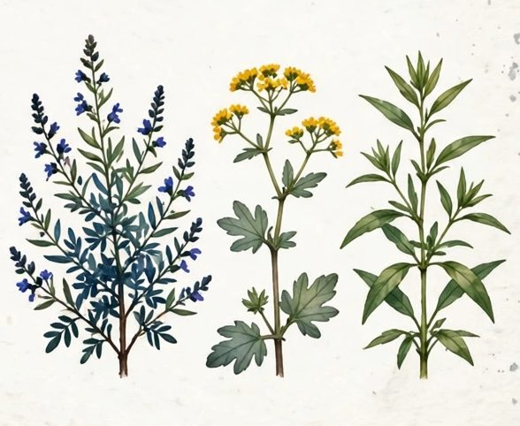
Woad, Japanese polygonum, and Strobilanthes leaves arranged on one table.
Indigofera is not the only road to this blue. Woad gives it in Europe, Japanese polygonum gives it in East Asia, and Strobilanthes gives it in parts of South and Southeast Asia, where its leaves have long been worked for a deep blue dye.
Calling them pretenders is perhaps unfair. They are separate plants, in different families and climates, that arrived at a similar chemistry. Several roads lead to one blue, and local dyers followed the plant that grew willingly near home.
13Woad in Europe
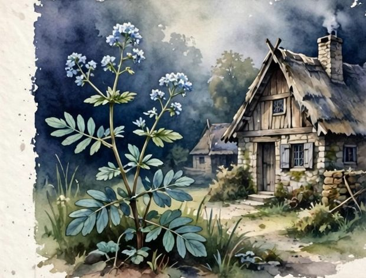
A woad town street in the old dye quarter, where the plant once paid for stone houses.
For some two thousand years, woad was the northern blue of Europe. It tolerated a cooler climate than true indigo, and towns that grew and processed it could grow rich on it. Woad wealth paid for houses, churches, and warehouses in more than one trading town.
Tradition also gives woad to the ancient Britons, said to have painted or stained their bodies blue before battle. The story is old and persistent, but the evidence is thin, and this hall records it as tradition rather than established fact.
14Leaves Like Any Other
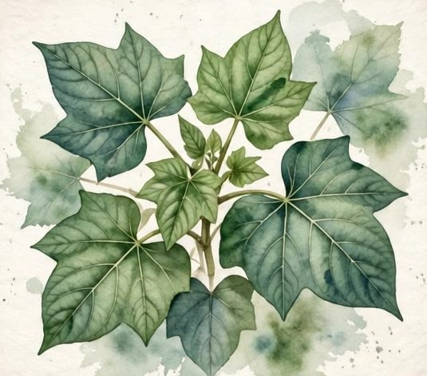
A handful of fresh indigo leaves, plain green against an open palm.
Pick a fresh indigo leaf and it is simply green. It smells faintly of vegetation, feels thin between the fingers, and shows no blue edge, no dark vein, no stain left on the skin. Nothing on the bush announces what is inside.
Many dyestuffs declare themselves. Madder root is red when cut, weld flowers are yellow in the field. Indigo does neither. Its color has to be coaxed out by water, air, and work, and until then the plant keeps a completely ordinary appearance.
15Where It Grows
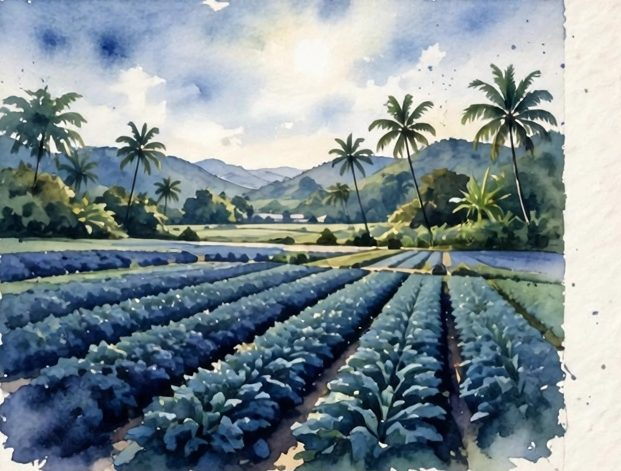
Indigo rows under hard sun, in soil that would disappoint a fussier crop.
Indigofera grows across the tropics and subtropics, in India, Africa, Southeast Asia, and the warmer Americas. It wants sun and warmth, a reasonably drained ground, and a season long enough to leaf out fully before cutting.
It asks little in return. The plant tolerates indifferent, even poor soil, and being a legume it helps restore nitrogen to the ground it grows in. In a hall full of demanding materials, a crop that improves its own field is welcome company.
✉️ The Dyer's Desk
Write to the Desk — a question, a correction, a memory of a pair of jeans. Replies within a day, in complete sentences.
16The Harvest
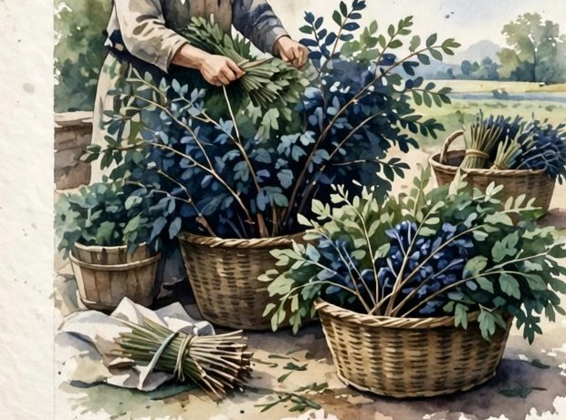
Cut indigo stems bundled at the field edge, just as flowering begins.
The harvest is timed to flowering. When the plant begins to bloom, the leaves hold the most of their hidden precursor, and cutters move through the rows taking stems while that quiet balance is at its peak.
The cut material does not wait. Leaves begin to change once they are picked, and the work of steeping follows close behind the work of cutting. A harvest here is not a storing up for later. It is the first step of the dyeing, taken outdoors.
17Indican, the Hidden Passenger
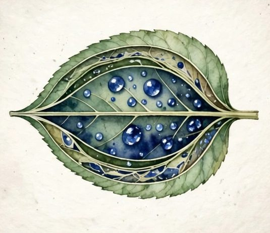
A leaf in cross-section, the colorless indican resting unseen in its cells.
Inside the living leaf, the blue does not yet exist. The leaf stores indican, a colorless substance held safely in its cells. On its own it has no color to show, and a leaf full of it looks exactly like a leaf with none.
Only when the leaf is broken, crushed, or steeped does the change begin. Enzymes free the indican, air does the rest, and the blue forms for the first time outside the plant. Indigo, strictly speaking, is made, not picked.
18From Leaf to Cake
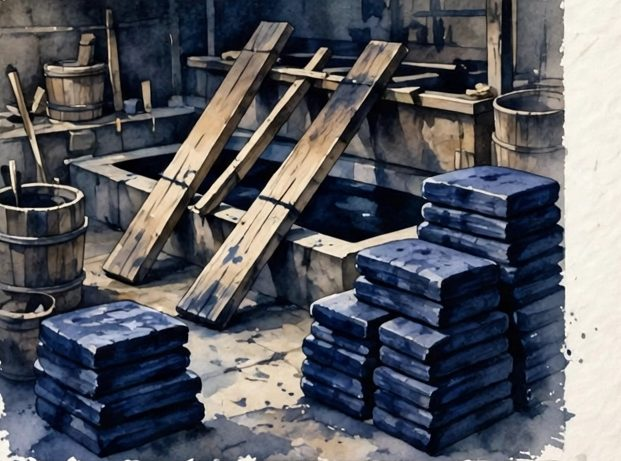
Settled indigo paste being lifted from a vat, then dried into dark cakes.
The oldest method is patient. Leaves are steeped in water until they ferment and soften, then the liquid is beaten or stirred to bring air through it. As the air works, the color appears, turning from greenish tones toward a settled blue.
The blue then falls out of the water as a fine paste. Gathered, pressed, and dried, it forms hard dark cakes that keep well and travel well. A field of leaves becomes a parcel a merchant can carry, which is how indigo crossed oceans.
19Seed and Season
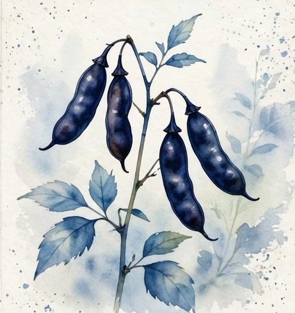
Dried indigo pods and saved seed, ready for the next sowing.
An indigo year has a steady rhythm. Seed is sown when the ground warms, plants are cut as they flower, and in warm climates the roots send up fresh growth for another cutting before the season closes.
Some plants are always left standing for seed. Their pods dry on the stem, and the seed is gathered and kept dry for the next sowing. It is patience practised as an agricultural method: this year dye, next year plants, from the same handful.
20Japanese Indigo
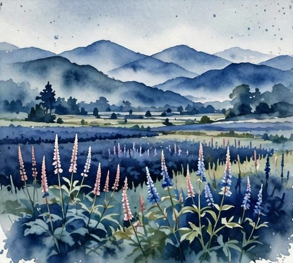
Tade-ai growing in neat rows in Tokushima, under a cooler northern sky.
In Japan the work falls to tade-ai, Polygonum tinctorium, a cooler-climate cousin in the knotweed family. It suits a shorter, milder summer than Indigofera allows, and it has been grown for centuries around Tokushima on the island of Shikoku.
Its leaves are harvested and then composted and fermented into sukumo, dark leaf matter that dyers can store and use through the year. Where the tropical plant gives cakes for trade, the Japanese plant gives a preserved leaf, and the vat begins from there.
21Indigo in the Americas
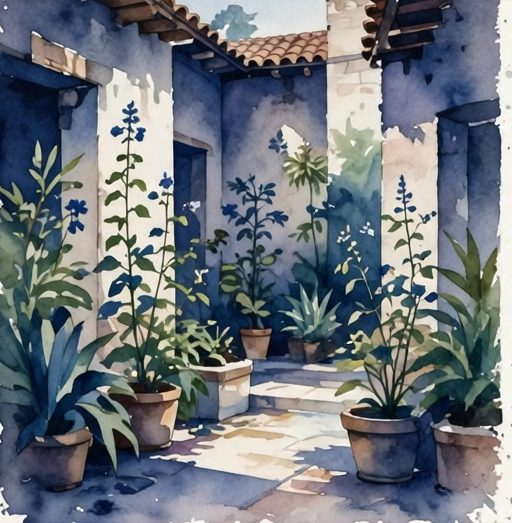
Añil, the American indigo, flowering far from Asia.
The Americas had their own indigo long before European ships arrived. Its source was Indigofera suffruticosa, a shrub native to warm American lands, known in Spanish as añil. The plant grew wild and in cultivation, and its leaves gave a blue suited to local fibres and climates.
Dyers in Mexico, Central America, and the Andes coloured cloth and thread with it for centuries. This was not a borrowed craft waiting to be improved. It was a separate, settled knowledge of leaf, vat, and season, already old when outsiders first described it.
22The Plant Is Patient
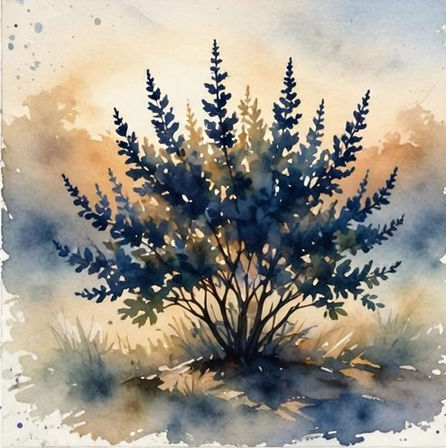
A quiet shrub through summer, harvested in a day.
For most of the year the indigo plant asks for little attention. It stands as an unremarkable shrub, putting out soft leaves and small flowers, storing its colour invisibly while the summer passes. Nothing about the green field promises blue.
Then comes the day of cutting, steeping, and work, when a whole season is gathered at once. The plant hall ends here, with that contrast. A slow, quiet growth, and a single working day in which the colour is finally asked for.
23The Vat
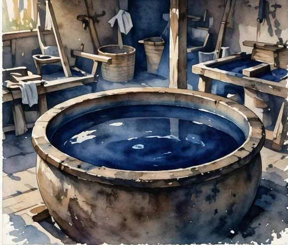
The vat at rest, dark on the surface, pale below.
Every indigo workshop gathers around its vat. The vessel may be clay, wood, copper, or a pit lined in the earth, but its place is the same. It is the hearth of the craft, the one thing that must be tended before any cloth can be coloured.
A vat is not mixed and used like paint. It is kept, fed, warmed, and read like weather. The dyer learns its smell, its surface, and the feel of the liquid, and judges the day's work from those quiet signs.
24Fermentation
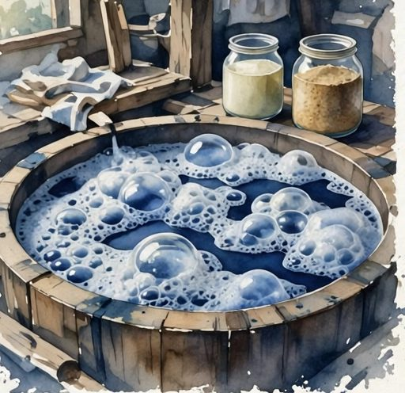
Bran, ash, and time at work beneath a still surface.
In a traditional vat, bacteria do the essential work. Indigo will not dissolve in water, so the bath must be reduced, and fermentation performs that reduction slowly. In the reduced state the dye turns soluble and pale, ready to enter the fibre.
Alkalinity keeps the process alive, supplied by lime or by wood ash lye. Old recipes fed the vat with bran, madder, dates, or syrup, food for the bacteria and ballast for the bath. Too sour or too alkaline, and the vat simply stops.
25The Flower of the Vat
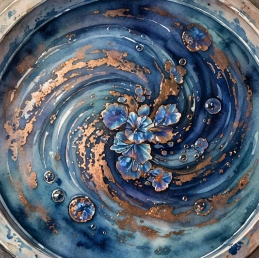
The coppery bloom a dyer looks for each morning.
A healthy vat announces itself on its surface. A coppery, metallic sheen gathers there, with deep blue bubbles and a film like oil on water. Dyers call this the flower of the vat, and they look for it before any other sign.
The flower means the bath below is reduced and ready. If it is dull, thin, or absent, the dyer waits, stirs gently, or feeds the vat and waits again. Readiness, in this craft, is observed rather than declared.
26Green Goes In, Blue Comes Out
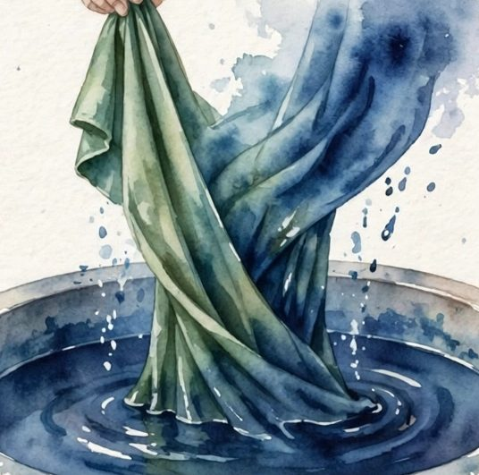
Cloth leaving the vat green, turning blue in the air.
Cloth lowered into a ready vat does not turn blue. It comes out yellow-green, almost disappointed in colour, because the dye inside the fibre is still in its dissolved, colourless form. The blue has not happened yet.
Then the air does its part. Oxygen restores the indigo to its insoluble blue form, locked within the fibres, and the colour deepens visibly over a minute or two. It is the quiet miracle of the craft, and it happens in plain sight, every time.
27The Dyer's Hands
Hands stained to the wrist, washed and stained again.
Before any cloth wears the colour, the dyer does. Hands that work a vat stain blue to the wrist, the dye settling into skin, knuckles, and the lines of the nails. Soap lightens it. Only time and new skin remove it completely.
In many dyeing regions the stained hand was a plain mark of trade, read at a glance in a market. The registrar notes that no glove has ever fully argued with an indigo vat. The hands keep the record of every dipping.
28Aizome
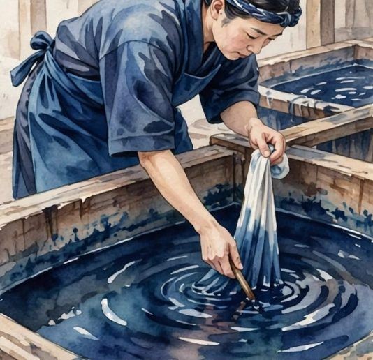
A Japanese dye house, vats set in a quiet row.
In Japan, indigo dyeing is aizome, a word that names both the colour and the discipline of producing it. The work developed over centuries into a refined practice, used for work clothes, household cloth, and fine patterned textiles alike.
Training in aizome is slow by design. An apprentice tends vats, prepares cloth, and repeats simple tasks for years before judging a bath alone. Repetition is the curriculum. Exactness arrives, if it arrives, through the hands rather than through explanation.
29Shibori
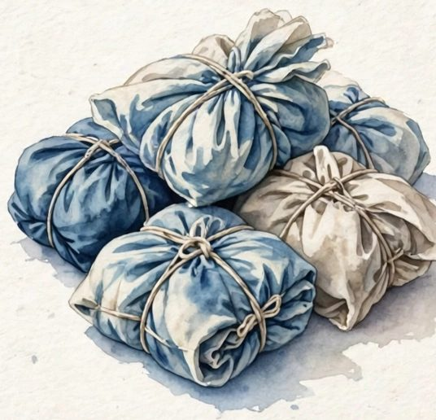
Bound and folded cloth, pattern held in the knots.
Shibori makes pattern by pressure before the dye ever arrives. Cloth is bound with thread, stitched and gathered, folded, twisted, or clamped between boards. The tight places resist the bath, and the loose places take the blue.
When the bindings are cut, the pattern appears as pale shapes on a blue ground, each one a map of where pressure was applied. No two pieces match exactly. The hand that tied the knots is present in every result, whether it intended to be or not.
30Resist
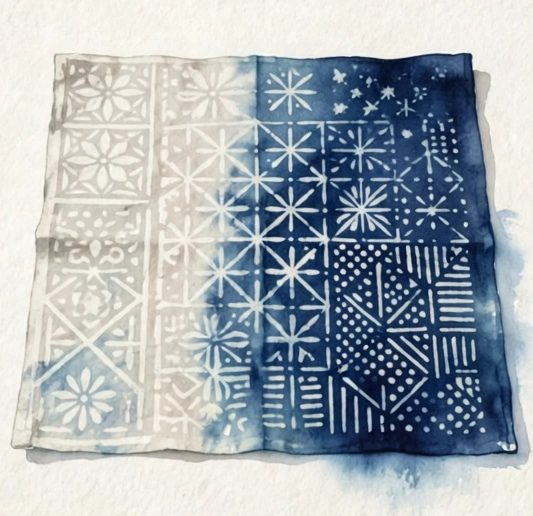
Paste, wax, and thread keeping their small territories white.
Resist is the general principle behind many indigo patterns. A substance or a pressure refuses the dye on the cloth's behalf. Wax, rice paste, mud, thread, folded wood, and even a tightly tied stone can all hold a place back from the blue.
The dyer plans the white as carefully as the colour. What is protected stays pale through every dipping, while the exposed ground grows darker around it. Pattern, in this craft, is often a record of refusal.
✉️ The Dyer's Desk
Write to the Desk — a question, a correction, a memory of a pair of jeans. Replies within a day, in complete sentences.
31Katazome
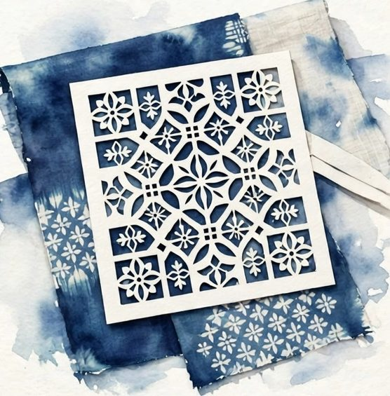
A paper stencil and a spatula, laying paste in lines.
Katazome lays its resist through a stencil. The pattern is cut into tough paper, made from mulberry fibre and treated to withstand water, and rice paste is spread through the openings with a spatula. The paste dries as a fine, deliberate skin on the cloth.
Then the cloth is dyed, sometimes many times, and at the end the paste is washed away. Crisp white pattern stands on the indigo ground where the paste once sat. The stencil can be used again. The patience cannot be reused in the same way.
32The Vat Is Never Emptied
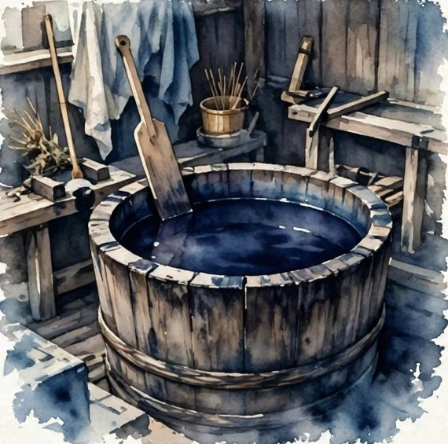
An old vat, topped up, its rim dark with years.
A good vat is not thrown away at the end of a project. It is topped up with water, fed, rested, and carried forward, sometimes for years. Dyers speak of old vats with respect, as working things that have learned their own balance.
Fresh dye and fresh food are added as the bath weakens, and the sediment at the bottom is left largely undisturbed. An heirloom with a surface, the vat outlives batches, seasons, and occasionally the dyer who started it.
33Sukumo
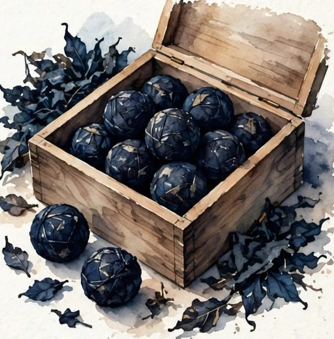
Sukumo, dark composted leaf, waiting to wake a vat.
Sukumo is Japan's way of keeping indigo for the vat. Fresh leaves are dried, then composted with water and turning over many weeks, fermenting down into dark, crumbly balls and cakes. The colour sleeps in this form, concentrated and stable.
To start a vat, the sukumo is loosened in alkaline water and fed until fermentation wakes. It is a slow starter for a slow process, the opposite of a packet opened at need. A winter of composting stands behind every blue it gives.
34Wool and Cotton Take It Differently
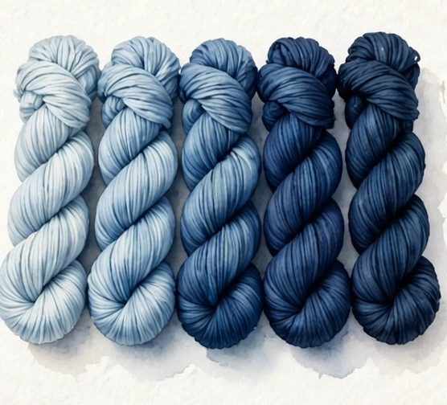
Two skeins from one vat, blues of different depth.
One vat does not colour all fibres equally. Wool, a protein fibre, takes indigo readily and can reach depth in fewer dippings. Cotton and other cellulose fibres are more reserved, asking for repeated dips and careful preparation to hold a strong blue.
The difference is chemistry, not quality. A dyer adjusts time, dips, and rest between immersions according to what is in the bath. The same blue, patiently persuaded, settles differently in a shepherd's wool and a weaver's cotton thread.
35Dyed in the Yarn
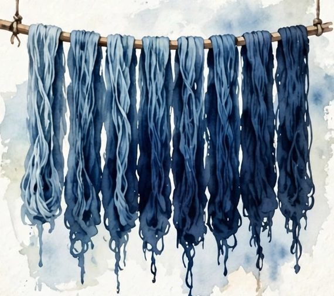
Hanks of yarn, dipped, aired, and dipped again.
Much indigo cloth begins as yarn. Hanks of thread are dyed before weaving, lowered into the vat, aired until blue, and lowered again, dip after dip, until the shade is deep enough. The colour must survive the loom, so it is built in layers.
Yarn dyeing gives woven patterns their structure. Blue and undyed threads can be set side by side in stripes and checks that no surface printing could quite imitate. Denim's white weft and blue warp is the most familiar survivor of this old arrangement.
36The Vat Has Moods
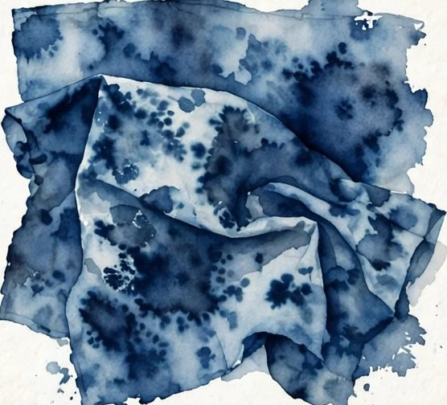
Morning light on a bath that will not repeat yesterday.
No two days at the vat are identical. Temperature shifts the fermentation, the season changes the water and the leaf, and a bath worked hard grows tired in ways a rested one does not. The blue that results carries all of this with it.
Skilled dyers adjust what they can and accept the rest. Slight unevenness, a paler passage, a deeper edge, are read as the vat's handwriting rather than as failure. The registrar files this under character, a category the craft uses often.
37Washing the Blue
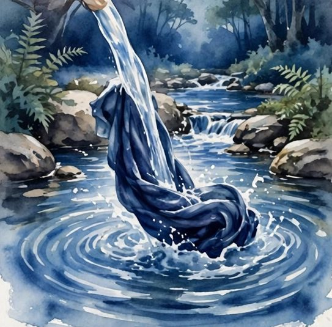
Rinse water running paler, basin by basin.
Finished cloth is rinsed, and rinsed again, until the water runs nearly clear. Indigo sits largely on the surface of the fibre rather than deep inside it, so loose pigment washes and rubs away in the early life of a garment.
That rubbing off has a name, crocking, and it is why new indigo stains hands, cuffs, and pale furniture. It is not a defect so much as the dye's nature. The colour that remains after washing is the colour the cloth will keep.
38You Cannot Hurry a Vat
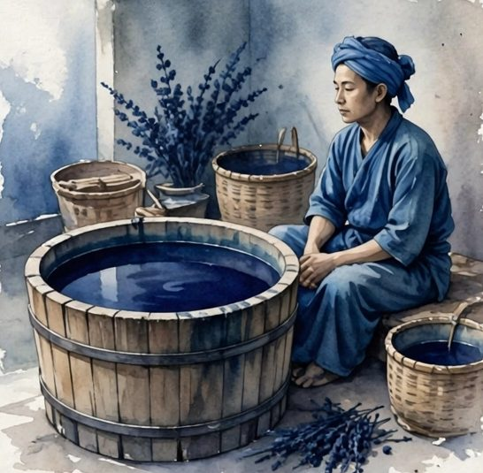
The dye house at rest, work waiting on fermentation.
Every stage of this craft keeps its own schedule. Fermentation reduces the bath in days, not minutes. Oxidation blues the cloth in its own minute, not sooner. Sukumo composts through a season because a season is what it takes.
The craft hall closes with that plain fact. Dyers learn waiting as a working skill, alongside stirring, dipping, and reading the flower. A hurried vat gives a thin, unwilling blue. Given time, the same bath gives depth that outlasts its maker.
39Blue Gold
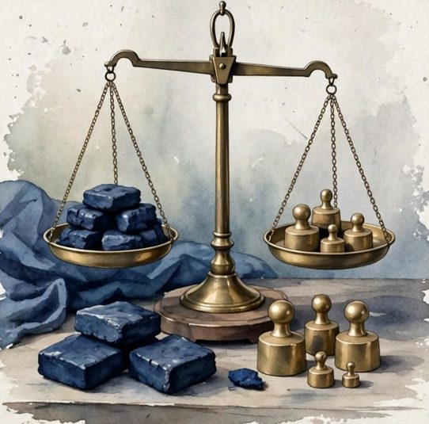
Pressed cakes of indigo, stacked for weighing and sale.
For centuries indigo travelled the world as a compact, valuable cargo. Dried and pressed into cakes, it held a season of leaves in a form that could be weighed, taxed, insured, and carried across oceans without spoiling. Colour, made portable.
At times it was worth more by weight than the ordinary goods packed around it, and merchants called it blue gold. A cake of dye was a kind of stored wealth. It asked only to be kept dry until a distant vat woke it again.
40Indian Indigo
A Bengal kothi, vats and drying sheds in long rows.
India became the great source of traded indigo, above all from Bengal and Bihar. There, indigo factories called kothis ran long rows of steeping vats and drying sheds, turning harvested leaf into pressed cake through the hot season's relentless work.
The finished cakes were sorted into grades by colour and purity, packed, and sent downriver toward Calcutta and the London market. Buyers judged a cake by its cut face and coppery rub. Behind each grade stood a countryside of planted fields.
41The Planters
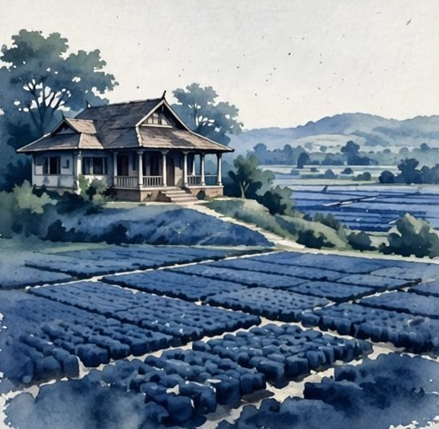
A planter's factory in Bengal, where village leaf became export cakes.
In nineteenth-century Bengal, European planters ran indigo factories built with capital from Britain. Most did not farm the land themselves. Instead they contracted with ryots, peasant cultivators, who grew the plant in their own villages and delivered the harvested crop to the factory for processing.
The contract began with an advance, a small sum paid before sowing. Once taken, the money bound the ryot to give indigo his best land, at a price fixed by the planter. The advance was renewed each year, and the obligation renewed with it.
42The Human Cost
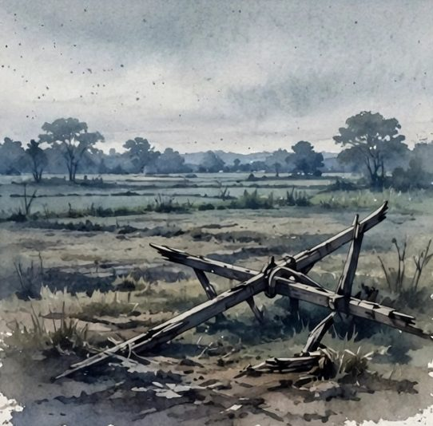
The field that grew dye could not, that season, grow rice.
The system rested on compulsion. Ryots who tried to refuse indigo were beaten, jailed on false charges, or had their crops and cattle seized. Factory servants and hired men enforced the contracts, and a planter's word carried more weight in local proceedings than a cultivator's.
Indigo also took good soil at the season when rice needed sowing. The planter was paid in a dye sold abroad at a profit. The ryot was paid below the cost of growing it, and kept the resulting hunger at home.
43Tinkathia: Three-Twentieths of the Land
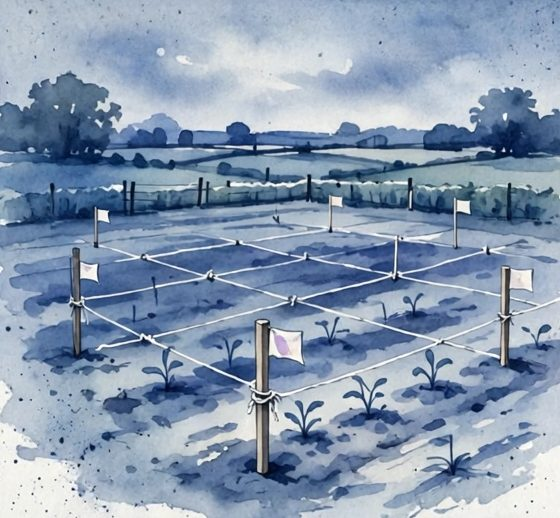
Three parts in twenty, measured out in another man's crop.
In Champaran, in Bihar, tenants on European estates were required under the tinkathia system to plant indigo on three-twentieths of their holdings. The fraction was exact. Surveyors and estate staff could measure a plot and mark which portion was not the tenant's to choose.
Three-twentieths is fifteen percent of a farm taken from food and from decision. On the remaining seventeen parts a family still owed rent and labor. The arithmetic was simple, and that was its force: unfreedom, stated as a proportion.
441859: The Indigo Revolt
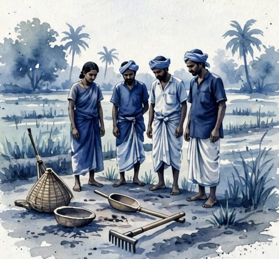
Village after village, the seed simply was not sown.
In 1859, ryots across Bengal began to refuse. Village by village, cultivators declined the advances, left indigo land unsown, and held to the refusal despite threats, beatings, and legal pressure. The refusal spread because it was shared; a single village could be punished, a district was harder to coerce.
Petitions and strikes carried the grievance beyond the fields. The government appointed an Indigo Commission in 1860, whose inquiry recorded the coercion in official language. Indigo planting in Bengal contracted sharply afterward, though the system survived elsewhere in India.
45Nil Darpan
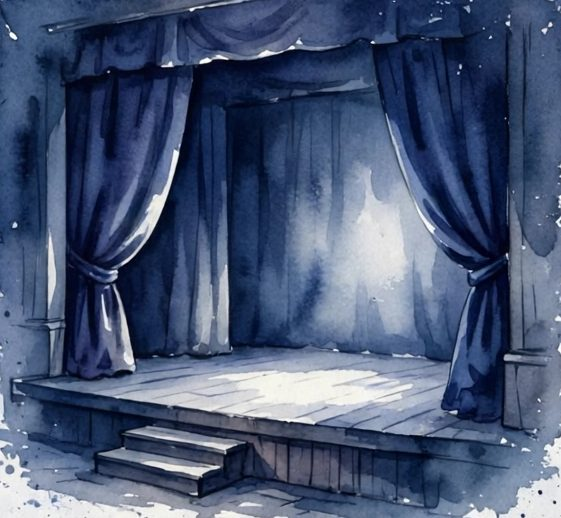
A play, printed and translated, entered the record as testimony.
In 1860 Dinabandhu Mitra published Nil Darpan, usually translated as The Indigo Mirror. The play staged what the factories preferred to keep local: planters, agents, beatings, and ryot families ground down by contracts. Its characters were invented. Its conditions were recognizable to anyone who lived under them.
An English translation was published in Calcutta by the Reverend James Long, who was then tried for libel, fined, and imprisoned for a month. The trial advertised the play further. Art had done what petitions struggled to do: it made the system legible to distant readers.
✉️ The Dyer's Desk
Write to the Desk — a question, a correction, a memory of a pair of jeans. Replies within a day, in complete sentences.
46Gandhi at Champaran
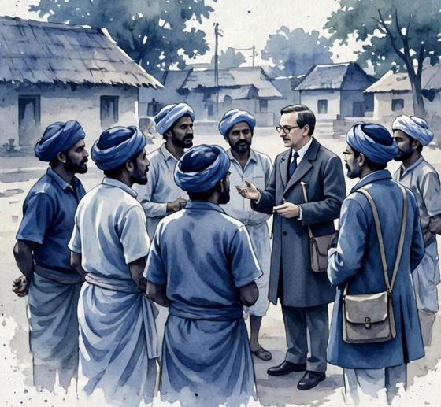
Statements taken down one by one, in a district built on a fraction.
In 1917 Mohandas Gandhi, a lawyer recently returned from South Africa, came to Champaran at the urging of local cultivators. He did not begin with a march. He began with documentation, recording statements from thousands of tenants about tinkathia, rents, and illegal extra charges.
Ordered to leave the district, he refused and was tried; the case was withdrawn, and an official inquiry followed. Tinkathia was abolished and some charges refunded. The episode is an early marker on a long thread that runs from the indigo fields toward Indian independence.
47Indigo and Slavery
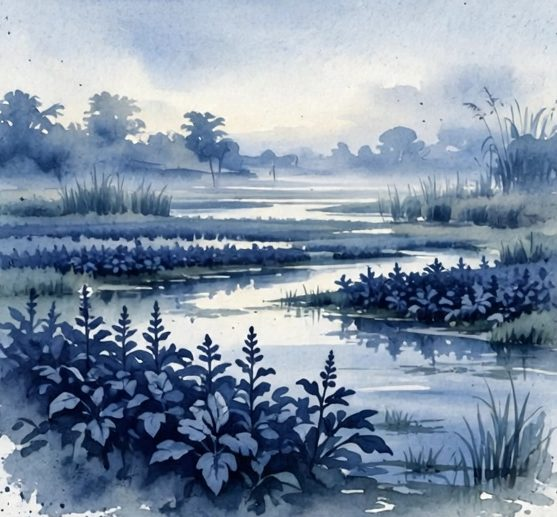
The Atlantic blue was raised by enslaved hands.
In South Carolina and the Caribbean, indigo was a plantation crop built on enslaved labor. Enslaved Africans cleared, planted, harvested, and processed it, working the vats through heat and stench. Their knowledge of dye plants and fermentation was part of the expertise the industry ran on and never credited.
Eliza Lucas Pinckney is often named for her successful trials in South Carolina in the 1740s. Stated plainly: she managed the plantations and the experiments, and enslaved people did the work and held the knowledge. The wealth was recorded under her family's name.
48The Atlantic Crossing
Dried cakes in the hold, valued like metal, bound for distant mills.
Processed indigo traveled as hard, dark cakes, light for their value and resistant to spoilage. Ships carried them from Caribbean and American ports to Britain and Europe alongside sugar, tobacco, and cotton. A cargo of dye could be insured, speculated on, and graded like bullion.
At the far end, dyers in industrial towns broke the cakes and dissolved the blue into vats. The crossing joined two continents in one color: plantation fields on one side of the ocean, mill cloth on the other, and the same substance passing between them.
49Synthetic Indigo, 1897
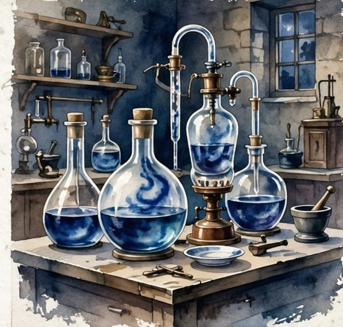
The leaf's molecule, made in a factory from coal tar.
Adolf von Baeyer determined the chemical structure of indigo in the early 1880s, but a structure is not a factory. At BASF in Germany, chemists spent years and a fortune finding a route cheap enough for industry, building on processes that began with coal tar derivatives.
In 1897 BASF brought synthetic indigo to market under the name of pure indigo. The product was consistent from batch to batch, free of the leaf's impurities, and priced to undercut the plantations. The laboratory had finished what it set out to copy.
50The Collapse
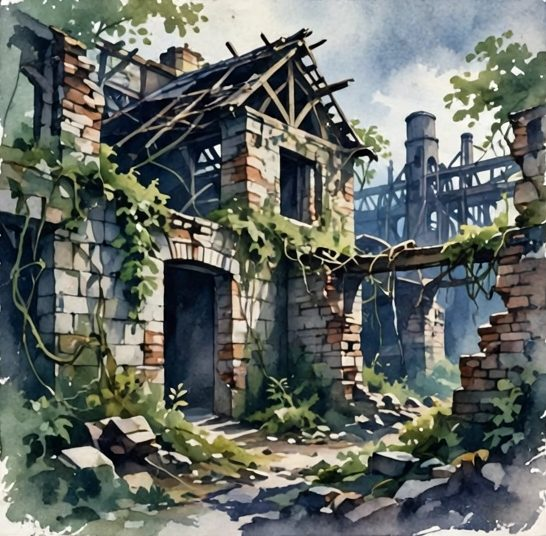
Within a generation, the fields emptied and the factories closed.
The decline was fast by the standards of an old trade. Within roughly twenty years of 1897, natural indigo production fell by some ninety percent as mills switched to the synthetic product. Prices that had supported plantations, factories, and shipping networks no longer held.
Planters sold up or turned to other crops. Processing factories were abandoned where they stood, their vats open to the weather. A brief wartime revival, when German dye was cut off, did not reverse the direction. The natural trade ended not with a decision but with a market.
51What the Chemists Copied
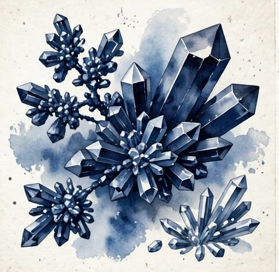
Two origins, one molecule, indistinguishable in the vat.
The blue in a leaf of Indigofera and the blue from a BASF drum are the same compound, indigotin. A dyer cannot tell them apart in the vat, and cloth cannot either. Chemically, nothing was lost in the copying; the molecule does not remember where it was made.
What differs is the biography around the molecule. One route ran through soil, seasons, advances, and coercion. The other ran through coal, capital, patents, and factory wages. The color is identical. The histories are not, and this hall keeps both in view.
52The Price of a Color
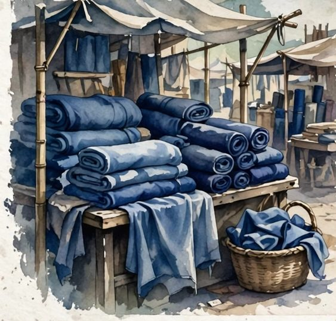
When blue became cheap, it stopped belonging to anyone in particular.
For most of history, saturated blue cloth cost money, and its wearers were marked accordingly. Synthetic indigo changed the arithmetic. Produced at industrial scale, the dye cost a fraction of the plantation product, and mill owners passed the saving into the price of ordinary cloth.
The result was a quiet redistribution. Work clothes, uniforms, and everyday dress could now be dyed a deep, durable blue by anyone, anywhere. The color of labor became available to every back, not as a luxury but as a default.
53After the Indigo Fields
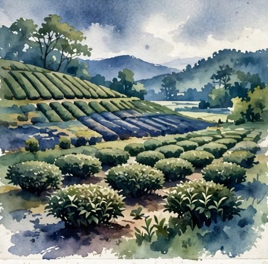
Chimneys left standing in fields that went back to food.
Land that had grown indigo did not stay empty. In Bengal and Bihar, fields passed to rice, jute, and other food and fiber crops. Some estates turned to tea in the hill districts. Tenants farmed on, under arrangements that changed more slowly than the crop did.
The factories were less adaptable. Many were simply left, their tall chimneys standing over fields that no longer fed them. In parts of the old indigo country the ruins remain part of the landscape, read by local people as markers of a system that ended.
54The Ledger of Blue
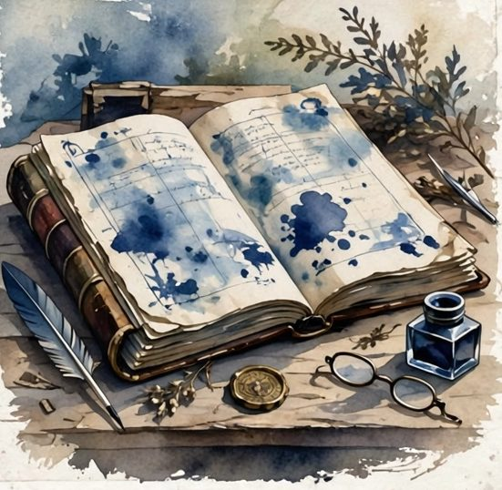
One column for the color, one for what the color cost.
The trade in indigo produced beautiful cloth and durable wealth, and it produced debt, hunger, and forced labor on three continents. Both entries belong in the same ledger. A museum that kept only the first would be decorating, not remembering.
This hall therefore closes without separating them. The blue in the cases ahead is the blue the ryots sowed under contract and enslaved workers raised in vats. The next rooms take up the cloth itself, and the work it was made for.
55Enter Denim
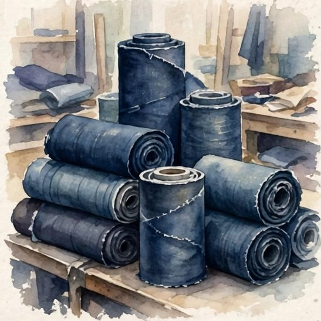
A twill from Nîmes, woven to be worn hard.
Denim takes its name from serge de Nîmes, the serge of Nîmes, a town in southern France known for sturdy woven cloth. The fabric is a cotton twill, its diagonal ribs formed by the way the threads cross, two over and one under, row after row.
Twill weave is part of the cloth's usefulness. The diagonal structure distributes strain and tolerates abrasion better than a plain weave of the same weight. Denim was not designed for appearance. It was built, from the loom up, for work.
56Warp and Weft
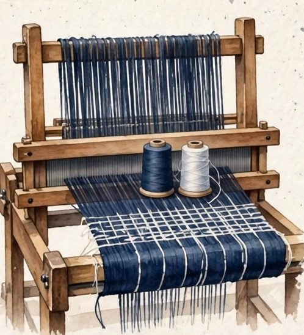
Blue threads running one way, white threads crossing beneath.
Cloth is woven from two sets of thread: the warp, held lengthwise under tension on the loom, and the weft, passed across it. In denim, tradition makes an asymmetry between them. Only the warp threads are dyed blue. The weft is left undyed, plain white cotton.
Turn a pair of jeans inside out and the construction shows itself: the outside is blue, the inside largely pale. The white weft sits underneath from the first day, waiting. Every later fade is already present in the weave, built in before the cloth was cut.
57Why the Warp Is Indigo
Color held on the surface of the thread, white at its heart.
Indigo does not soak into cotton fiber the way many dyes do. Passed through the vat and exposed to air, it fixes on the thread's outer surface, ring-dyeing it: a blue skin around a white core. Dyers repeat the dipping to deepen the shade.
This shallow hold is denim's defining property. Friction at knees, thighs, and folds rubs the blue skin away and exposes the white core beneath. The cloth does not simply grow old. It records wear as a lightening pattern, thread by thread.
58Jeans
A Genoese word, a California patent, dated 1873.
The word jeans comes from Genoa, the Italian port whose sailors wore a sturdy cotton cloth that took the city's name in French and English. By the nineteenth century such cloth was workwear across docks and workshops on both sides of the Atlantic.
In 1873 Levi Strauss, a San Francisco dry-goods merchant, and Jacob Davis, a tailor in Reno, Nevada, patented a waist overall reinforced with copper rivets at the points of strain. Davis had the idea; Strauss had the business. The patent joined them, and the modern jean begins there.
59The Five-Pocket Pattern
Two in front, two behind, and one small pocket with an older job.
The standard jean settles into an anatomy: two curved pockets in front, two patch pockets behind, and a fifth, smaller pocket set inside the right front one. That small pocket was sized for a pocket watch, standard equipment in its day.
Copper rivets anchor the pocket corners where fabric tears first, and orange stitching draws arcs across the back pockets. Each element began as a solution to a failure. Together they hardened into a pattern so familiar that changes to it read as commentary.
60Fading as Biography
Whiskers, honeycombs, and stacks: a life, printed by friction.
Because indigo sits on the thread's surface, a worn jean maps its wearer. Pale creases fan from the front of the hips, called whiskers. Diamond patterns form behind the knees, called honeycombs. Rings settle at the ankles where extra length folds and rests, called stacks.
None of these marks can be scheduled. They accumulate through sitting, walking, kneeling, and washing, or the refusal to wash. Two identical pairs diverge within a year. The cloth keeps a record its owner never wrote, in the only ink it has: less blue.
✉️ The Dyer's Desk
Write to the Desk — a question, a correction, a memory of a pair of jeans. Replies within a day, in complete sentences.
61The Honest Fade and the Factory Fade
Two pairs of jeans, one lightened by years of wear, the other by a single afternoon in a factory.
An honest fade takes years. The cloth lightens where the body bends and carries — at the knees, the seat, the pocket where a hand rests — because the white core of each yarn is slowly exposed, thread by thread, in the order of a life.
A factory fade is made in hours, with pumice, bleach, lasers, or sand. Sandblasting drove fine silica into the lungs of workers and caused silicosis, an incurable scarring of the lung. It has been banned in several countries, and the cost is part of the cloth's record.
62Blue Work Clothes
A French chore coat in bleu de travail, its patch pockets worn smooth at the edges.
In France, work had a color. The bleu de travail, the blue of work, was worn in factories, on farms, and in workshops — a loose jacket, often of cotton twill or moleskin, dyed a deep, forgiving blue.
The chore coat kept the shape: three or four patch pockets, a plain collar, buttons that could be replaced by hand. Worn by generations, it became something quieter than a uniform — a national dress of labor, recognized at a glance.
63The Blue Collar
A work shirt collar in faded indigo, beside the white collar of an office shirt.
The phrase blue collar began as a description of cloth. Manual workers wore dark blue shirts and jackets because the color hid grime between washings, while office workers wore white collars that stayed clean at a desk.
Over time the collar stood for the work itself, and then for a class of people who do it. A metonym in indigo: first a practical dye on a work shirt, then a name spoken in economics, politics, and pride.
64Indigo in Uniform
Uniform jackets in deep blue: police, postal, railway, and naval cloth in a single row.
Services choose deep blue again and again. Police officers, postal workers, railway staff, and sailors have all worn it — a color close to night, steady in poor light, and slow to show dust, rain, and wear.
There is dignity in it as well. Indigo darkens a uniform without the severity of black, and it reads the same in a harbor, a station, or a street. The cloth works quietly, and so, it suggests, does the person inside it.
65Selvedge and Slow Looms
The turned cuff of a selvedge jean, showing the white edge and its woven red line.
Old shuttle looms weave slowly. A shuttle carries the weft back and forth through the warp, laying a continuous thread, and the cloth comes off narrow — with its own finished edges, the self-edge, or selvedge, that will not fray.
Turn up the cuff of selvedge denim and the edge often shows a red line woven into the white. It is a small signature of slow making: fewer yards an hour, more irregularity in the weave, and a texture that changes with wear.
66A Pair of Jeans Is a Diary
An old pair of jeans, darned at the knee, the outline of a wallet still pale in the back pocket.
A pair of jeans keeps its own record. The creases at the hips settle into pale lines, the wallet leaves its outline in a back pocket, and a torn knee is darned, then darned again in a slightly different thread.
The owner forgets most of this. The cloth does not. Long after the days themselves have blurred, the garment holds their shape in fade and repair — a diary written not in words, but in where the blue gave way.
67Newton Names It
Newton's spectrum from Opticks, 1704, its seven colors set beside the seven notes of a scale.
The naming happened at a wall in a darkened room, where Newton let a beam of sunlight fall through a prism and spread into an elongated band of color. In Opticks, published in 1704, he set down the band's count and its names — a count this hall has already confessed owed as much to music as to light.
Indigo was the name he fixed to the stretch of the band between blue and violet, where the system needed a word as much as the eye did. A dye known from cloth and trade — a substance weighed in cakes — gave its name to a slice of light, and the name has held for three centuries.
68Four Hundred Forty-Five Nanometers
A ruler of light: the visible spectrum marked in nanometers, indigo near 445.
Light can be measured like distance. Indigo sits at roughly 445 nanometers — about 445 billionths of a meter — within a band often given as 420 to 450 nanometers, between blue above it and violet below.
At that scale, a color becomes an address. Say 445 nanometers in any laboratory in the world and the same narrow slice of the spectrum is meant. The dye in a vat is local and variable; the wavelength is not.
69Is Indigo Really There?
A spectrum without labels, blue passing into violet with no visible seam between them.
It is fair to ask whether indigo is really there. Many people, shown the spectrum, see a continuous passage from blue to violet and cannot point to where a separate indigo begins. The eye is not obliged to follow Newton's seven.
Many modern color scientists fold indigo into its neighbors, treating it as bookkeeping rather than a band of its own. The doubt is honest and worth keeping: the rainbow does not label itself, and our divisions, however old, remain ours.
70Structural Blue
A feather under magnification, its barbs scattering blue light without any blue pigment.
Most blues in nature are not pigment at all. There is almost no blue dye in a feather or a shell; instead, microscopic structures in the surface scatter the short blue wavelengths back to the eye, a Tyndall scattering of light.
Change the structure and the color changes, though nothing has been repainted. This structural blue shifts with angle and light, living in the geometry of the surface. It is color as arrangement — the same physics that makes the sky itself appear blue.
71The Indigo Bunting
A male indigo bunting in full sun, blue from head to tail.
The indigo bunting is a small North American songbird with a trick of light. In shadow the male looks brownish, almost dull. Step into full sun and he blazes a deep, saturated blue from head to tail.
There is no blue pigment in his feathers. Tiny structures within them scatter blue light and absorb the rest, so the color depends on the sun's cooperation. On a gray morning the bird is modest; by noon, he is architecture lit from outside.
72Wings Without Pigment
A morpho butterfly with wings open, and one scale magnified to show its ridged surface.
The morpho butterfly of Central and South America carries one of the strongest blues in nature on wings that contain no blue pigment. Their scales are built in microscopic ridges, stacked like roof tiles at the scale of light itself.
The ridges interfere with incoming light, canceling most wavelengths and returning blue in a bright, almost metallic sheet. Crush the wing and the structure collapses — and the blue dies with it, leaving the brown material that was there all along.
73Indigo Ink
An open sketchbook: a landscape washed in indigo, the white paper left for the light.
Indigo also writes. Ground as a pigment and mixed with water or a binder, it makes an ink and a wash — muted, gray-leaning, softer than lamp black and cooler than sepia, suited to skies, water, and evening.
Sketchbooks hold indigo washes laid down in layers, each one drying paler than it looked when wet. On paper the color behaves like dusk: it settles slowly, deepens in the folds of a drawing, and leaves room for the white of the page to shine.
74Pigment Blue 66
A labeled jar of Pigment Blue 66 beside a painter's swatch, its edge already softening.
Standardized for paint and printing, indigo is Pigment Blue 66 — a name that lets a maker in one country supply the same color to a printer in another. The powder is consistent, portable, and weighed like any other goods.
Honesty requires a note: in paint, indigo is not the most lightfast of blues. Left in strong light, it can fade where sturdier modern blues hold. Painters who love its duskiness use it knowingly, accepting a color that may soften with the years.
75The Chemistry of the Vat, Plainly
Cloth lifted from the vat, pale green-yellow, turning blue as it meets the air.
Start with the problem: indigo is insoluble, and cloth cannot drink a powder. To dye with it, the dyer reduces it in the vat — removing oxygen until it becomes its pale, yellow-green leuco form, which is soluble and can enter the fiber of cloth or yarn.
Then the air undoes the undoing. Lifted from the vat, the cloth meets oxygen and the leuco form oxidizes back to insoluble blue, locked inside the fiber. The vat is a controlled undoing, and every blue thread is a small restoration.
✉️ The Dyer's Desk
Write to the Desk — a question, a correction, a memory of a pair of jeans. Replies within a day, in complete sentences.
76Indigo Carmine
A laboratory flask of clear indigo carmine solution, blue as bottled water from a deep lake.
Indigo carmine is indigo made sociable. Treated with sulfuric acid, the insoluble dye becomes a soluble salt — a clear, strong blue that dissolves in water and can be measured, diluted, and dosed with precision.
That usefulness carries it far from the vat. It colors medicines and foods — in Europe it is the food color E132 — and serves in laboratories as an indicator and a diagnostic dye. The same family of blue, made to behave in a beaker.
77Measuring a Color
A spectrophotometer reading a swatch of denim, its curve of returned light on the screen.
A mill cannot order a memory. When a buyer asks for this exact blue, the agreement is kept by instruments: a spectrophotometer shines light on the cloth and records, wavelength by wavelength, how much of each the surface returns.
The delivery is measured against the standard the same way, and the numbers must agree within a tolerance both sides accepted beforehand. It is an unromantic procedure, and a fair one — a color held to account by light itself, not by anyone's recollection.
78A Color You Can Weigh
A balance holding a small heap of indigo powder, beside a prism casting its band of light.
So indigo ends the science hall holding two identities at once. It is a band of light at about 445 nanometers, which no one can touch or store, and it is also a powder in a jar, with a weight on a scale.
The powder has a formula: C₁₆H₁₀N₂O₂ — sixteen carbons, ten hydrogens, two nitrogens, two oxygens, arranged in the shape that makes blue possible. A color you can weigh, spell, and shine: few colors let you hold both ends of the story.
79West African Indigo
Prestige cloth in deep, near-black indigo, its surface shining faintly after beating.
In West Africa, deep indigo has long been prestige. Among Yoruba and Hausa dyers, cloth dyed to a dark, almost black blue — in dye pits fed with indigo and fermented with care — signaled wealth, skill, and standing.
Such cloth was worn at ceremonies, given in marriage, stored as value, and traded over long distances. The depth of the color was itself the message: many immersions, much dye, much labor, held in a surface that shone faintly like water at night.
80Adire
Adire cloth from Abeokuta: white patterns standing open on a deep indigo ground.
Adire is the indigo cloth of Yoruba women in southwestern Nigeria, centered on Ibadan and Abeokuta. Before dyeing, patterns are resisted with cassava paste — painted freehand, laid through a stencil, or drawn with a feather or palm spine.
Other cloth is stitched and tied, so the dye cannot reach the gathered lines. Once the paste is rinsed out after dyeing, white and pale blue patterns stand open on the deep ground: leaves, birds, proverbs, and the maker's steady hand.
81The Blue Men of the Sahara
An indigo veil, wound against wind and sand.
In the Sahara, Tuareg men wear veils and robes dyed deep indigo, wound against wind, sun, and sand. The cloth is beaten until it holds a faint sheen, and the color is built up slowly, dip after dip in the vat.
The dye is never fully fast, and it rubs onto the skin over time, leaving hands and faces tinted blue. Outsiders noticed, and the name they gave, the Blue Men of the Sahara, stayed, though it describes the cloth as much as the people who wear it.
82Chinese Batik
Hot wax drawn on cotton, before the indigo bath.
In Guizhou, Miao and Buyi makers practice wax-resist dyeing on cotton. Hot wax is drawn onto the cloth with a small copper tool, in fine lines and repeating motifs, and the drawing is left to cool and harden.
The cloth then enters the indigo bath. Where the wax covers, the blue cannot take, and when the wax is boiled away, white patterns remain on a dark ground. The finished pieces are kept for festivals and for dowries, folded and stored between wearings.
83Indian Block Prints
A carved wooden block, pressed by hand, row by row.
At Bagru and in Ajrakh work, patterns are printed with carved wooden blocks, one block for each color or layer. Some steps use resist pastes that block the dye, others use mordants that fix it, and the order of the steps decides the final design.
Between printings, the cloth is washed, often in rivers, and laid out to dry in the sun. A single length may pass through many hands and many washings before the indigo ground and the pattern settle into their finished relationship.
84Chintz and the Export Cloth
Painted and printed cotton, made for distant markets.
Indian painted and printed cottons, often set against indigo grounds, were coveted in Europe for their color, lightness, and washability. The cloth arrived by ship in large quantities, and European makers could not at first match its quality or its price.
The trade was large enough to move law. Britain and France imposed calico bans in the late seventeenth and early eighteenth centuries, restricting the import and wearing of these cottons to protect domestic wool and silk. The bans eventually lapsed, but the cloth had already changed taste.
85Japanese Noren
A split indigo curtain at a shop doorway.
A noren is a split cloth hung at a doorway, and in Japan it is often dyed indigo. Customers and staff pass through the central slit, and the panels move slightly in the air from the street.
On the dark ground, a shop crest or name is left white in resist. The curtain works as a sign without words. Hung in the morning, it says the shop is open. Taken down at night, it says the day is finished.
86Kasuri
Threads patterned before weaving, edges softly blurred.
Kasuri is Japanese ikat, in which threads are bound in sections and dyed before any weaving begins. The pattern is planned in the yarn itself, so warp and weft must be aligned with care at the loom for the image to appear.
A slight blur at the edges is the signature of the technique, not a fault. Kurume, in Fukuoka, became known for its indigo kasuri, used for work clothes and everyday garments, with small white patterns scattered across a deep blue field.
87Indigo in Southeast Asia
Dark indigo cloth, brightened with embroidery.
Among the hill peoples of Southeast Asia, indigo dyeing and batik are carried in everyday cloth. Hmong makers draw wax patterns on fabric, dye it dark, and then add embroidery in bright thread against the blue.
The contrast is deliberate. The indigo ground is deep and quiet, and the stitched colors sit on it clearly. Patterns and techniques are passed within families and villages, so the cloth carries identity as plainly as it carries warmth or shade.
88Blues of the Americas
Ikat threads in Guatemala, dyed before the loom.
The Americas have their own indigo traditions, older than the colonial plantations and continuing alongside them. In Guatemala, jaspe ikat binds and dyes threads before weaving, producing patterned cloth in which indigo is a central color.
In the Andes, blue-dyed textiles also persist in local practice, with methods and motifs shaped by place. These traditions were never a single imported style. They developed in their own regions, and makers still dye, weave, and wear them today.
89Cloth as Currency
A bolt of indigo cloth, measured and exchanged.
In parts of West African trade, bolts of indigo cloth served as money. Lengths of dyed fabric were measured, assessed for quality and depth of color, and exchanged for goods in markets where cloth had a recognized value.
It was value you could wear. A bolt could be stored, carried, divided, or made into clothing, and its worth was visible in the evenness of the dye. What held the arrangement together was trust in the material itself — work that everyone could inspect by hand and eye.
90One Blue, Many Hands
The textiles hall closes; the vat remains the same.
This hall ends where it began, with a single molecule. Indigo is the same compound in a Sahara veil, a Guizhou batik, a Bagru print, and a Kurume kasuri, yet no two traditions handle it in quite the same way.
The vat is the same, and the hands are local. Each place developed its own grammar of pattern, its own tools, timing, and reasons for wearing blue. The color traveled widely, but the meanings were made at home, one cloth at a time.
✉️ The Dyer's Desk
Write to the Desk — a question, a correction, a memory of a pair of jeans. Replies within a day, in complete sentences.
91Indikon
A Greek word, naming a dye by its country.
The word indigo comes through Latin from the Greek indikon, meaning the Indian dye, or the Indian substance. The color is named for a country, for the place Europeans understood the finest dye to come from.
The word arrived in Europe before most eyes there had seen the dye itself. It traveled in texts and trade accounts, attached to a material carried over long distances, so for many readers indigo was first a name, and only later a color they could hold.
92Languages Without Blue
A sea described by its darkness, not its hue.
Many languages long had no separate word for blue. In Homer, the sea is famously wine-dark, described by depth and darkness rather than by hue, and similar gaps appear in other early vocabularies around the world.
This does not mean speakers could not see blue. It means the category was not yet named apart. Names tend to arrive with materials and trade, when a dye, a stone, or a pigment makes a color common enough, and distinct enough, to need its own word.
93Mood Indigo
A 1930 song title, still heard in the color.
In 1930, Duke Ellington recorded Mood Indigo, composed with Barney Bigard and with lyrics later added by Irving Mills. The title joined a color to a state of mind, and the slow, muted arrangement matched the pairing.
After the song, indigo could be heard as a feeling as well as seen as a dye. It suggested blue as weather inside, a quiet, lowered light rather than a bright one. The phrase entered ordinary speech, and the color carried the music with it.
94Indigo in Poetry
The hour in verse when blue deepens toward night.
Poets reach for indigo when a plainer blue will not hold the moment. The word is longer and slower, and it suits dusk, distance, devotion, and melancholy, subjects that gather at the edge of the day.
In verse, indigo often marks the almost-night, the interval when objects lose their edges but have not yet disappeared. It is a color for looking far, or for looking inward, and poets return to it for that brief, uncertain light between clarity and dark.
95Indigo Children
A label from the 1970s, discussed here as cultural history.
In the 1970s, parapsychology and New Age writing introduced the idea of indigo children, a label for children said to have indigo auras and unusual sensitivity or independence. Nancy Ann Tappe developed the idea in that period, and the 1999 book by Lee Carroll and Jan Tober brought it to a wider audience.
The concept has no scientific standing, and it is recorded here as a cultural phenomenon of its era. For some parents in the 1970s through the 1990s, the label offered a gentler way to describe children who did not fit school or convention, and that appeal helps explain its spread.
96A Name People Choose
One word on a doorway, a stage, and an aircraft.
People keep choosing indigo as a name. Bands have taken it, hotels have taken it, and the Indian airline IndiGo carries a version of it on aircraft seen by millions of passengers each year.
The choice is rarely accidental. At a doorway, on a stage, or at a departure gate, the word promises depth and calm without saying very much. It suggests a place or a sound considered carefully, in a color associated with night, cloth, and quiet attention.
97The Wheel Is Blue
A navy wheel at the center of a national flag.
At the center of India's flag stands the Ashoka Chakra, a wheel with twenty-four spokes, rendered in navy blue. It replaced the spinning wheel on the flag in 1947, when the design was adopted for the independent nation.
The wheel is understood as a sign of law and of movement, of dharma turning without ceasing. Its color is the dyer's deep blue, set between saffron above and green below, and it is seen daily on one of the most widely recognized flags in the world.
98Uniforms of Trust
Deep blue uniforms, seen at a distance.
Institutions often choose deep blue for uniforms, from police and pilots to hospital staff and transit workers. The color recalls the night sky, reads as steady, and does not compete for attention the way brighter colors do.
Deep blue also keeps a certain cleanliness at a distance. Marks show less than on white, and the cloth holds its formality longer through a working day. Authority without glare is the effect most often sought, a presence meant to be recognized quickly and questioned slowly.
99Two Cities Inside a Word
Nîmes and Genoa, hidden in everyday clothing.
Two European cities are hidden inside everyday clothing words. Denim carries Nîmes inside it. The cloth was the serge of that French town — serge de Nîmes — and trade and speech shortened the phrase over time until the place-name alone was the word.
Jeans carries Genoa the same way: the city's name, Gênes in French, was given to the sturdy cloth and trousers associated with its sailors and workers. Most people who wear denim jeans carry both cities with them, usually without knowing either name is there.
100The Brow Chakra's Color
Indigo at the brow, in a modern map of the body.
In modern chakra systems, indigo is assigned to Ajna, the brow point, often called the third eye. It is placed between the blue of the throat below and the violet of the crown above, in a sequence arranged like a spectrum.
This map is presented here as a modern cultural system, developed and popularized in recent centuries from older Indian ideas, rather than as an account of anatomy. Within that system, the brow color stands for intuition and inward seeing, for attention turned quietly toward thought.
101What People Believe Indigo Does
A deep shade, and the meanings people rest upon it.
People often say indigo calms a room, steadies attention, and suits quiet work. Others associate it with intuition, with knowing something before it can be explained, and with the depth of thought that comes late in the evening.
These are beliefs people hold about the color, not findings measured in a laboratory. They are worth recording plainly, as part of its history. A color can carry meanings for centuries without those meanings becoming facts.
102A Word for Depth
Where the word hall ends, the word keeps going.
Over time, indigo has become shorthand for depth itself. People speak of a deep night, a deep thought, a deep blue, and reach for this word when ordinary blue feels too shallow or too bright for what they mean.
That is a fitting place for the word hall to close. The name began with a plant and a trade route. It now also names an hour of the evening, and the feeling of looking down into clear, dark water.
103The Natural Revival
Wooden tubs and patient hands, in working studios again.
In recent decades, dyers, small studios, and modest brands have returned to the fermented vat. They stir it, feed it, and wait for the flower to form on its surface before any cloth goes in.
The slowness is a deliberate choice, made with open eyes. It is not nostalgia dressed up for marketing. A living vat sets its own pace, and the dyer agrees to that pace as the condition of the color.
104Growing Indigo in a Garden
A sunny bed, green leaves, and a modest harvest.
A home bed of polygonum or indigofera asks for sun, regular water, and patience more than expertise. The plants grow like unremarkable shrubs for most of the season, their future color invisible in the green leaf.
Harvest the leaves at their peak, process them promptly, and expect a modest yield. That is the honest scale of a garden. It will not dye a wardrobe. It will dye a scarf, and teach the hands what the books describe.
105Natural or Synthetic: The Honest Ledger
Two blues, side by side, with their costs written out.
Natural indigo asks for land to grow on, water for the fields and the vat, and many hands for planting, harvest, and dyeing. Its costs are visible and local, borne by soil, rivers, and the people who do the work.
Synthetic indigo asks for petrochemical feedstock, descended from coal-tar chemistry, and repays it with consistency and industrial scale that clothes millions. Both blues are real indigo. Their costs differ in kind, not simply in size, and this page declines to preach either way.
✉️ The Dyer's Desk
Write to the Desk — a question, a correction, a memory of a pair of jeans. Replies within a day, in complete sentences.
106Living Masters
Knowledge kept in the hands, over decades of vats.
Some dyers have kept the same vats alive for decades, feeding them through winters, illnesses, and quiet years when almost nobody wanted natural blue. Their workshops smell of ash, bran, and fermentation, and they read those smells fluently.
Much of what they know was never written down. It lives in hands that judge temperature without a thermometer and noses that know a healthy vat. Apprentices learn by standing nearby, season after season, until the judgment becomes their own.
107Indigo Farms Return
A dye crop, finding its place in the rotation again.
Small indigo agriculture has returned in parts of Japan, the American Southeast, and Europe, where growers plant it in modest fields rather than plantations. It enters rotations alongside food crops, cover crops, and fallow seasons.
The harvests are small and the buyers are mostly local dyers and studios, which suits both sides. A crop that once crossed oceans in cakes now sometimes travels only a few valleys, from field to vat, within a single summer.
108The Fermentation Revival
Laboratory glass standing beside the wooden tub.
Contemporary studios are rebuilding bacterial fermentation vats, including the sukumo craft of composted indigo leaves, long practiced in Japan. The work is slow, attentive, and occasionally uncertain, because the vat is a living culture, not a recipe.
In these studios, laboratory glass stands beside wooden tubs. Microscopes and notebooks help, but they do not replace stirring, smelling, and waiting. The revival succeeds precisely where old craft and new measurement agree to share the room.
109Slow Fashion's Blue
Small batches, priced to include the waiting.
Some garments are now dyed in natural indigo in small batches, a few dozen pieces at a time, dipped and rested by hand. The blue varies slightly from piece to piece, because the vat, the weather, and the day vary.
Their prices, when they are honest, include the waiting: the weeks of fermentation, the repeated dips, the drying between them. That is not a premium for a story. It is simply the labor, written into the cost where it belongs.
110Indigo in the Museum
Work cloth, resting at last behind glass.
Exhibitions of indigo textiles now draw steady crowds. Visitors stand quietly before robes, quilts, banners, and lengths of cloth that were made for labor, ceremony, or trade, and read their labels with unusual patience.
There is a gentle reversal in it. Cloth once valued because it endured work is now treasured enough for glass cases and low light. The museum does not change the cloth. It changes how long people are willing to look at it.
111Questions to Ask
Three plain questions, asked before the purchase.
The word natural on a label can mean careful craft, and it can also mean very little. Greenwashing exists in indigo as elsewhere: vague claims, leaf imagery, and blue language that answers nothing when it is questioned.
So ask the seller three plain questions. Which plant was used. Which kind of vat dyed it. Who did the dyeing. A seller with real answers will give them gladly. A seller without them has told you something as well.
112The Vat Is Not Nostalgia
A working vat, in the present tense.
A working vat today is a practice, not a costume. It produces cloth people wear, mend, fade, and wear again, and it asks the same patience of its dyers that it asked five hundred years ago.
That closes the hall of indigo today. The color keeps earning its place not by being old, but by still working: in fields, studios, gardens, and wardrobes, wherever someone is willing to wait for blue to happen properly.
113How to Look at Indigo
Daylight first, then the folds, then the hands.
The closing hall opens with simple guidance. Look at indigo in daylight when you can, because evening light flatters it and fluorescent light flattens it. Look at the folds, where the dye rests deeper and the cloth remembers its shape.
Touch the cloth if touching is allowed, and read the fade as the cloth's memory: pale where hands, sun, and work have been, dark where they have not. A faded piece is not a spoiled one. It is a recorded one.
114First Questions
Brief answers, in the order visitors ask them.
Is indigo a color or a dye. Both. It names a substance taken from plants, or made synthetically, and it names the deep blue that substance gives to cloth. The word has carried both meanings for a long time.
Is it blue or purple. Yes, depending on the light, the cloth, and the eye, which is why block 4 asked you to look twice. Does it fade. Gracefully, like denim, softening rather than vanishing, over years of ordinary use.
115More Questions
The second round of questions, answered as briefly.
Will it rub off on skin or furniture. Loose surface color can crock, especially on deep, fresh dye. Washing the cloth before use removes much of it, and what remains rarely travels far or stays long.
Is natural always better. See the ledger at block 105, where the costs are weighed without a sermon. Can you dye at home. Yes, a small vat is possible, with sun, patience, protective gloves, and modest expectations for the first season.
116The Dyer's Desk
Every fifteenth block, a desk. This is what it is for.
This page keeps a desk, in the manner of a registrar. The form that appears below every fifteenth block is that desk: a plain place to leave a question, a correction, or a note about cloth you own.
Messages left there are read by a person and answered in complete sentences, though not always quickly. The desk prefers one clear question to five hurried ones. It keeps no list of visitors, and it sells nothing from its drawer.
117A Short Shelf
Three books, recommended without hurry.
For further reading, three honest sources rest on this shelf. Jenny Balfour-Paul's Indigo follows the dye through trade, empire, and revival. Dominique Cardon's Natural Dyes gathers the world's dye plants and methods with scholarly care. Michel Pastoureau's Blue: The History of a Color traces how blue itself rose, slowly, to its present place in Western life. Each rewards slow reading, and none of them will mind being borrowed from a library first.
118Fine Print, First Entry
What this page is, stated on the record.
Fine print, first entry. This page is a museum hall of words and pictures about a real dye. It contains no vat, no cloth for sale, and no dye works behind a curtain, however blue the photographs may look.
The Desk is a form, and the vat is elsewhere: in studios, gardens, and fields described in these blocks. The hall is labeled honestly, as the Lunar hall was before it. What you have read is the exhibit. That was always the arrangement.
119Fine Print, Second Entry
Corrections welcome; screens, as ever, approximate.
Fine print, second entry. Corrections are welcomed at the Desk, and good ones will be entered into the record with thanks. A hall that cannot be corrected is only a shop window with longer sentences.
One standing caution, repeated from block 4. Colors on your screen may differ from cloth in daylight, sometimes noticeably. The screen offers an approximation and means well. For the true color, trust a window, a piece of cloth, and your own eyes.
120The Last Dip
Green from the vat, blue in the air, blue in the hands.
The last dip ends as every dip does. The cloth comes out of the vat green, improbably green, and then, in the open air and in your hands, it turns blue slowly, as if deciding, and then as if it had never been anything else.
That change is the whole hall in one gesture. When you next look up at dusk, find that color again above the rooftops. It was there before the dye, and it will remain after the visit. Thank you for walking slowly.
✉️ The Dyer's Desk
Write to the Desk — a question, a correction, a memory of a pair of jeans. Replies within a day, in complete sentences.